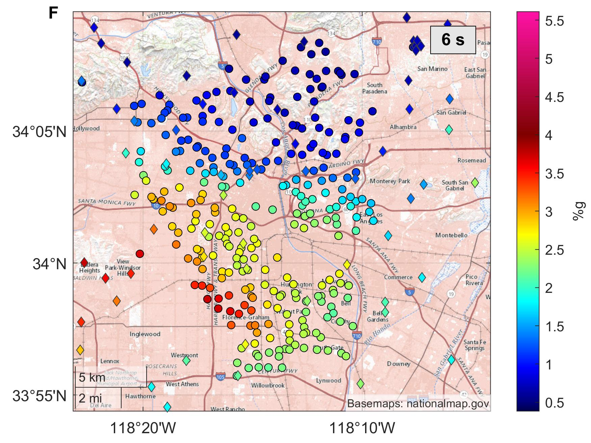
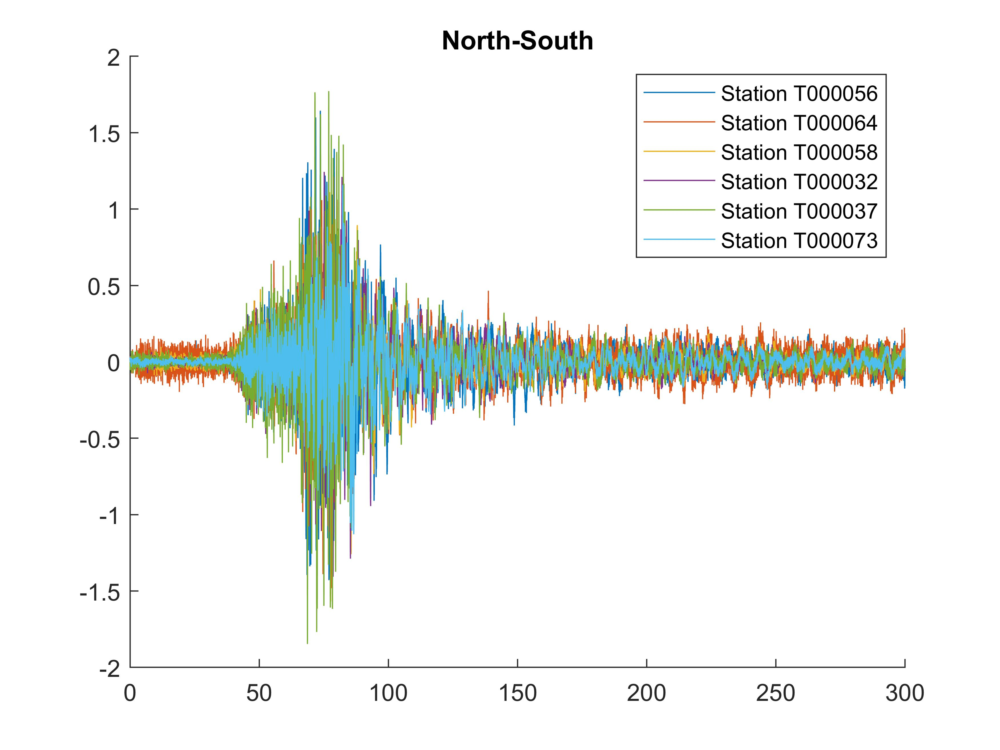
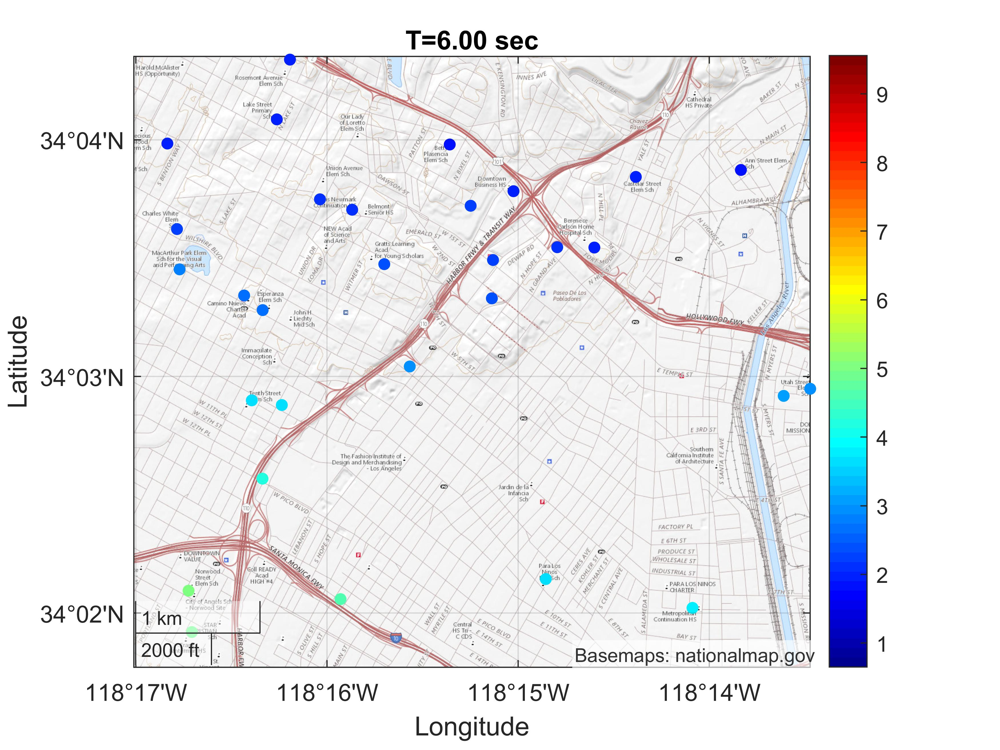

Project Pages & Posts
-

Animations from the 2019 Mw7.1 Ridgecrest Earthquake
Movies of the ground velocities and ground displacements in urban Los Angeles during the strong motion part of the Mw7.1 2019 Ridgecrest earthquake
Fri 24/Jan/2020
-

Downtown High-rises in "lucky" Locations
We calculate the site amplification factors in urban Los-Angeles. Acceleration measurements from the main Mw7.1 2019 Ridgecrest earthquake are used. A downtown hig-rise building could be in a much worse situation if located just a few blocks to the south.
Fri 24/Jan/2020
-

Damage ID for a 15story Steel Moment Frame
We test the effectiveness of our sparse Bayesian learning methodology for specific damage scenarios for a steel moment frame structure. Simulated acceleration response time histories are used. Part of my presention in the 2019 Engineering Mechanics Institute Conference (EMI2019).
Sat 1/Jan/2020
-

Publication: Identification of Sparse Damage in Steel-Frame Buildings Using Dense Seismic Array Measurements
L1 regularization and sparse Bayesian learning techniques are developed and tested for their effectiveness for identifying the location and size of damage in buildings. Encouraging results are obtained by applying the methods to selected types of linear and nonlinear building models and damage scenarios using simulated acceleration response time histories. Part of my presention in the 12th International Workshop on Structural Health Monitoring (IWSHM2019).
Sat 1/Jan/2020